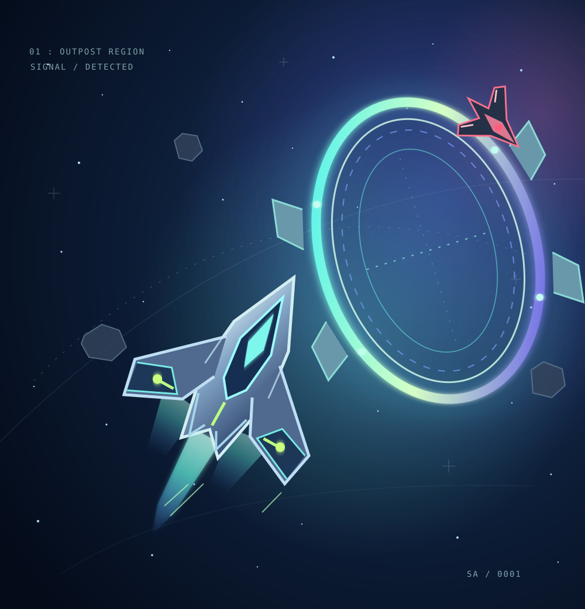
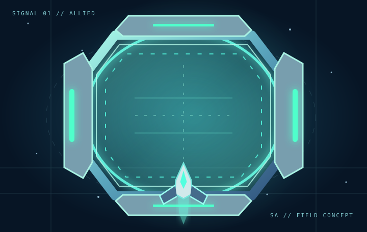
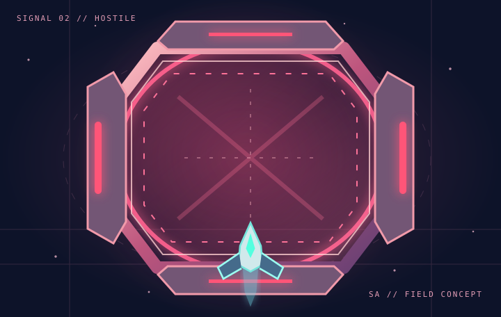

ALLY OUTPOST
A friendly signal on your route. Look for the opportunities that allied territory might offer as you pass through.
SIGNAL TYPE FRIENDLYOne ship. Split-second decisions. A universe that never stands still.
Meet SpaceAtom, a solo-developed sci-fi action game where your route matters, friendly and hostile outposts change the stakes, and forward is the only way to go.

SpaceAtom is about the moments between seeing a path and choosing it.
Navigate an ever-shifting encounter, spot the signals ahead, and decide how to move through the unknown. Allied and enemy outposts bring different implications for the journey — so positioning and timing matter.
Not all openings lead to the same outcome. Learn to recognize the difference between an allied signal and a hostile one.
The concept is simple to grasp and built around staying alert. Read the field, choose your line, and react to what comes next.
Guide your ship through a world of moving decisions. Your approach to an encounter is part of the challenge.
Watch for friendly and hostile outposts. Recognizing what lies ahead can change the path you take.
React to the encounter and make your next move count. Staying ready is as important as moving forward.
Original characters from the world of SpaceAtom — artwork sourced from the actual game project.
Actual development screenshots and captures, never manufactured gameplay imagery.
Two sides of a battlefield, each with its own visual language. Outposts are a key mechanic currently being developed for SpaceAtom.

CONCEPT ART / ALLIEDA friendly signal on your route. Look for the opportunities that allied territory might offer as you pass through.
SIGNAL TYPE FRIENDLY
CONCEPT ART / HOSTILEA hostile presence that demands attention. A route through enemy-controlled space carries a different kind of risk.
SIGNAL TYPE HOSTILEVisuals on this website are illustrative concepts, not screenshots or a promise of final in-game appearance.
A closer look at the SpaceAtom project's currently available visual concepts. These are illustrations used to communicate the game’s direction, not captures of its playable build.
These illustrations are already part of this website repository. Official in-game characters, logo, and gameplay imagery will be shown only after the authentic files are imported from the game project.
SpaceAtom is being created by one independent developer, with Godot at its core. The ambition is to make a distinctive, approachable space-action game with readable visual design, satisfying movement, and encounters that invite quick decisions.
An evolving indie project — built in the open spirit of making, testing, and improving.
SpaceAtom is in active development. The plan is to keep iterating on the game, refining its systems, and building toward an initial Android release.
A working project in Godot, with the core direction and outpost interactions being developed and iterated.
PHASE / 01Continuing to improve gameplay feedback, visual clarity, and the experience of navigating encounters.
PHASE / 02Mobile is the intended starting point, with future updates and releases planned as the project grows.
PHASE / 03Whether you're a player, publisher, or fellow developer, there's room to follow the mission as SpaceAtom takes shape.